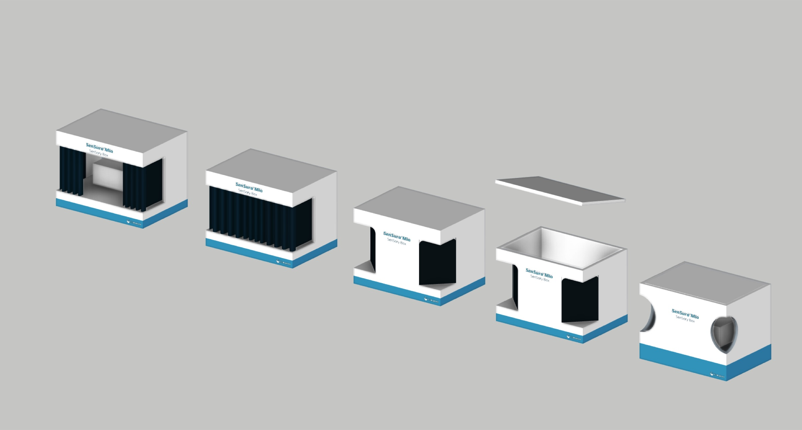
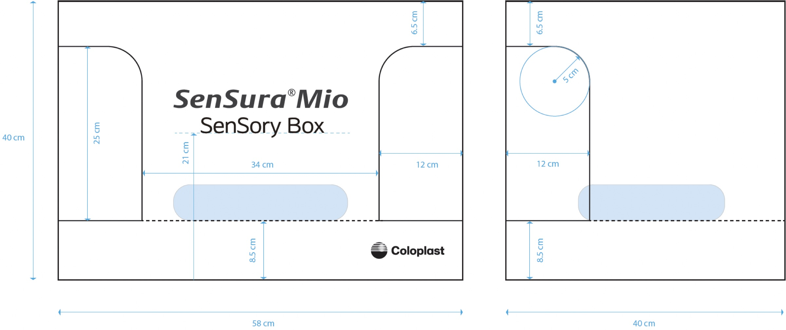
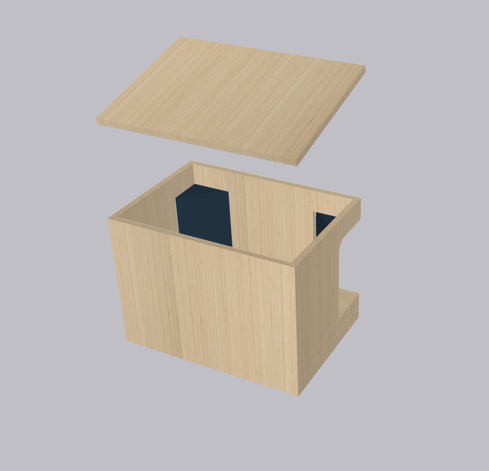

02 — INTERNSHIP · CLIENT PROJECT 01
Back to internship ↗Coloplast — Portable Demonstration Concept
3D Design / Concept Development
For Coloplast’s SenSura® Mio, I developed concepts for a compact tabletop display with a curtain, allowing users to handle a product without seeing it. The brief focused on making a previous oversized display easier to transport to hospitals and educational settings. I explored a smaller format and incorporated Coloplast’s visual identity.
Tools SketchUp



